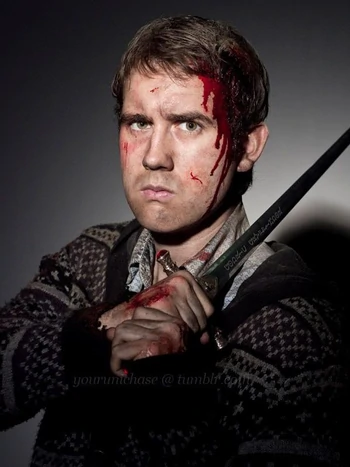
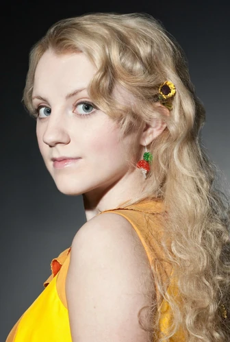
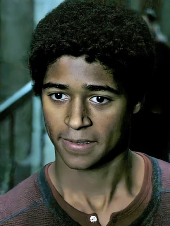

Harry Potter - Hidden gems and insights from a true fan
Side character knowledge
Side characters
Neville Longbottom

His parents, a pair of famous aurors, were in the order of the phoenix and got tortured into
insanity by Belatrix Lestrange,
when neville was one year old. He was then raised by his grandmother 'Augusta Longbottom'
His parents live now in at St Mungo's Hospital for Magical Maladies and Injuries, as
they are
mentally damaged from their torture.
Lord Voldemort decided by himself, after hearing the prophecy, that the little
Harry Potter is the
chosen one,
even though the prophecy is not that specifically leading to the potters.
Harry and Neville, because of the prophecy, could have both been meant by it.
Lord Voldemort, however, made the decision that the Potters and not the Longbottoms
were meant.
His grandmother believed that Neville was not a magician because he never showed any impulsive
magical actions as a young boy.
Neville's Uncle Algie tried to tease out his magical powers by hanging Neville out of a
window
when Neville's grandmother offered Uncle Algie a piece of lemon meringue.
Algee accidentally let go of Neville when he accepted the pie and Neville bounced around her
yard like a rubber ball.
Although Neville expressed his love for Luna Lovegood in the last movie, this was
actually Dean Thomas in the books.
Neville got married to Hannah Abbot and was the godfather to Harry Potter's second son
Albus Severus Potter.
Neville had no talent for "potions," but he was gifted in "herbology," for which he became a
professor when he grew up.
Even though he was small and not of outstanding cleverness, he was brave to stand up for his
friends
and himself.
This is the reason, the speaking hat placed him at Gryffindor, which as professor, he was the
head
of house.
Luna Lovegood

She saw her mother die when she was nine years old, because she wanted to develop an
experimental spell, but unfortunately was killed by it.
As a result, she was the only student besides Harry who was able to see thestrals.
The actress who played Luna in the films, originally applied to the role of Hermine. J.K.
Rowlings promised her a side role, if she overcomes her bulimia, which she did and got
the role of Luna.
Luna's Father published Harry's interview in his magazin 'The Quibbler'. This article helped
Harry to convince the majority of the wizardry world, that Lord Voldermort has
returned.
Luna's good friends Harry and Ginny Potter also named their daughter and third child Lily,
Luna Potter in honour of her.
After the war, Luna became a Magizoologist, discovering and classifying many magical species
that had never been encountered before.
She eventually married Rolf Scamander, the grandson of Newt Scamander, a famed
Magizoologist, with whom she had twin sons, Lorcan and Lysander.
Dean Thomas

Dean's father never told his mother that he was a wizard and was eventually murdered by Death
Eaters
when he refused to join them, Dean grew up thinking he was Muggle-born.
All of Dean's eight half-sisters were non-magical.
Dean was in a loving relation with Ginny Weasley, which married Harry Potter
later on.
Dean's presumed Muggle-born status put him on the run from the Ministry of Magic of Magic.
He went on the run after the Ministry of Magic
fell under the control of Lord Voldemort and began rounding up Muggle-born wizards and
witches.
Dean placed a woolly hat on top of Dobby, to represent that Dobby was a free
elf. At the funeral,
Dean expressed his thanks to the elf for rescuing them from the Malfoy Manor.